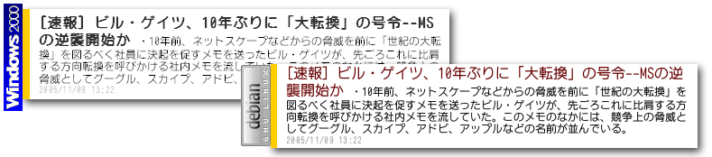
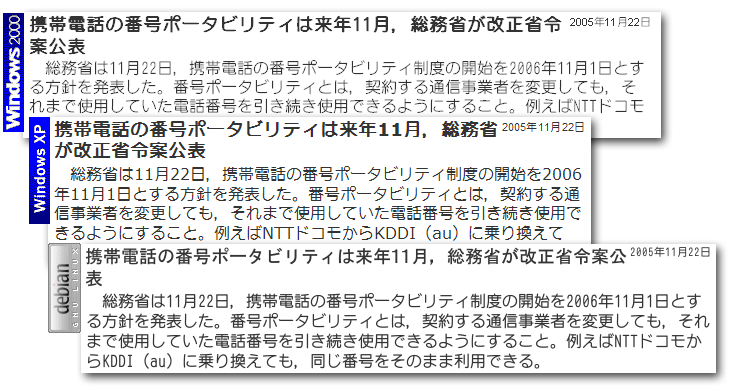

Debian GNU/Linux 3.1 の TrueType フォント設定
Debian GNU/Linux 3.1 (sarge) に新規TrueTypeフォントを追加するには、
$ mkdir ~/.fonts
$ cp *ttf ~/.fonts/
$ fc-cache
で できます。このあとで Firefox 等の設定でそのフォントを選ぶだけで 表示できます。 しかしそのままだとボールド(太字)が太くならず、普通の文字と同じに表示されます。

Fedora Coreと日本語フォント - ITmedia オルタナティブ・ブログ によると、
最新バージョンのXft 2.1.7とfreetype 2.1.10、fontconfig 2.2.3では、「日本語フォント（というかボールド情報を持っていないフォント）でボールドがでない」という問題はすでに解決されており、その3つの組み合せでは正しく日本語フォントでボールドフォントが表示される。
とのことですが、Debian3.1ではその設定でボールドになりません。 調べてみると、
$ dpkg -l | grep font
ii fontconfig 2.3.1-2 generic font configuration library
ii libfreetype6 2.1.7-2.4 FreeType 2 font engine, shared library files
ii libxft2 2.1.7-1 FreeType-based font drawing library for X
ということで freetype のバージョンが低いためボールドが出ないようです。
解決策としては freetype のバージョンを上げる方法もありますが、Debianのパッケージ管理をまだよく分かっていないので、バージョンを上げずに別の方法を模索します。
日本語 TrueType フォントで太字 (Bold) が表示されない - Debian GNU/Linux スレッドテンプレ によれば、~/.fonts.conf を書けば 太字フォントに別のフォントを割り当てることができるそうです。
リンク先の設定をそのまま試したところ、私の予想した結果と異なりました。
- 通常フォント名: Anito-M-Mono (アニトM等幅)
- 太字フォント名: RgPGothic-Bd (リョービ PゴシックB)
私は上記の組み合わせで試して、FirefoxでWebページを表示するのはボールドとふつうフォントが使い分けらることはできました。しかし、コンソール(mlterm)でも使い分けられてしまい困ってしまいました。コンソールでは可変幅フォントが使われると文字が欠けまくるためです。
私の希望する条件は下記のようになります。
- sans-serif (可変幅) のときは 1)ボールドなら リョービPGothic, 2)非ボールドならアニト
- monospace (等幅) のときはいつでもアニト
この設定を実現する .fonts.conf の書式を調べました。
man fonts-conf とか
fonts-conf
や
Xft フォントシステムの設定
を読むことである程度分かりました。
結局私の設定は下記のようになりました。
通常とボールド(太字)のフォントを使い分ける設定
~/.fonts.conf
<?xml version="1.0"?>
<!DOCTYPE fontconfig SYSTEM "fonts.dtd">
<fontconfig>
<match target="pattern">
<test name="family" compare="eq">
<string>sans-serif</string>
</test>
<test name="weight" compare="more">
<const>medium</const>
</test>
<edit name="family" mode="prepend">
<string>RgPGothic-Bd</string>
</edit>
</match>
<match target="pattern">
<test name="family" compare="eq">
<string>sans-serif</string>
</test>
<test name="weight" compare="less_eq">
<const>medium</const>
</test>
<edit name="family" mode="prepend">
<string>Anito-M-Mono</string>
</edit>
</match>
<match target="pattern">
<test name="family" compare="eq">
<string>monospace</string>
</test>
<edit name="family" mode="prepend">
<string>Anito-M-Mono</string>
</edit>
</match>
</fontconfig>
XML なので少し分かりにくいですが、普通のプログラム言語ふうに書くと
if (family == "sans-serif" and weight > medium){
family = "RgPGothic-Bd"
}
if (family == "sans-serif" and weight <= medium){
family = "Anito-M-Mono"
}
if (family == "monospace"){
family = "Anito-M-Mono"
}
のような意味です。(prepend は厳密には assign とはちがいますが…)
この設定したあとで Firefox でこのフォントを使うためには、 フォント名(アニトとか)を直接選ばず sans-serif や monospace という フォントを選んでおく必要があります。

Debian 3.1ではフォントのレンダリングがgoodです(サブピクセルレンダリングはオフ)。 まったく同じフォントを使っているのですが、 Windows2000のアンチエイリアスや WindowsXPのクリアタイプよりもきれいに見えます。 WindowsXPはどうしてこうギザギザになるんだろうか？
そのほかの Debian GNU/Linux 3.1 (sarge) のセットアップ方法の記録です。
コンソールでキー配置を変更したい (CapsLockキーを Ctrl にする)
/etc/console-tools/remap
s/keycode 58 = Caps_Lock/keycode 58 = Control/;
/keycode 27 = Meta_braceleft/a control keycode 27 = Escape
X でキー配置を変更したい (CapsLockキーを Ctrl にする)
~/.Xmodmap
remove Lock = Caps_Lock
remove Control = Control_L
keysym Caps_Lock = Control_L
add Control = Control_L
~/.xsession に xmodmap ~/.Xmodmap を追加。
mlterm でアニトフォントを使いたい
~/.mlterm/main
" font
fontsize=16
use_anti_alias=true
use_variable_column_width=false
" color
fg_color=white
bg_color=#000011
~/.mlterm/aafont
"ISO8859_1=Bitstream Vera Sans Mono-iso8859-1:90;
ISO8859_1=Anito M Mono-iso8859-1:100;
JISX0201_ROMAN=Anito M Mono-iso10646-1:100;
JISX0201_KATA=Anito M Mono-iso10646-1:100;
JISX0208_1983=Anito M Mono-iso10646-1:100;
JISX0208_1990=Anito M Mono-iso10646-1:100;
ISO10646_UCS2_1_BIWIDYH=Anito M Mono-iso10646-1:100;
ISO10646_UCS2_1=Anito M Mono-iso10646-1:100;
ISO10646_UCS4_1=Anito M Mono-iso10646-1:100;
ISO10646_UCS4_1_BIWIDTH=Anito M Mono-iso10646-1:100;
コンソールで Beep音を鳴らさないようにしたい
以前PCを自作したときにはブザー用のスピーカーをつながないという方法で Beepを出さなくしていましたが、その方法ができないPCもあります。そのときは…
~/.inputrc
set bell-style none
vi の静音化はできなかった。
X で Beep音を鳴らさないようにしたい
~/.xsession に xset b off を追加。